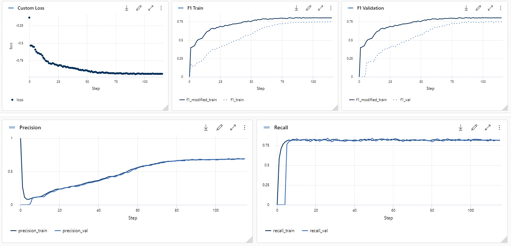
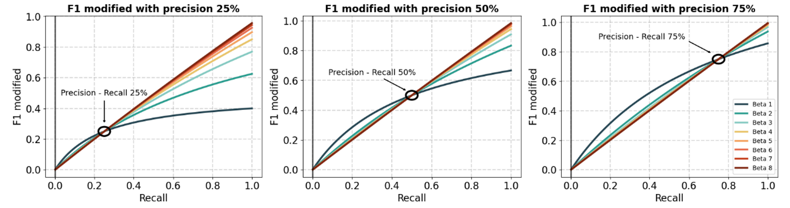

Simulation of a graph-based fraud detection algorithm deployed in a production Azure ML system
Bank fraud is the order of the day and more complex mechanisms for the prevention of this type of transactions are in demand. In this work we seek to apply graph-based algorithms for the detection of these, offering tools for the implementation of the algorithm in production and its maintenance over time. The main tools applied are Azure cloud services and neural network algorithms based on heterogeneous graphs.

An excellent performance of this type of algorithms has been achieved, with results close to 80% in the target metric, and its implementation in Azure ML. To obtain the expected performance, a customised cost function is used to provide a correct balance of the true positive rate.

Thanks to the intensive processing, the generation of the graph by applying the Pytorch Geometric library and the application of the cost function, results that exceed the usual procedures are achieved. In addition, a dashboard has been generated using Power BI which reflects the key characteristics that prevent the degradation of the model. Together with this, an API is developed to see which characteristics the algorithm takes into account for a given prediction.